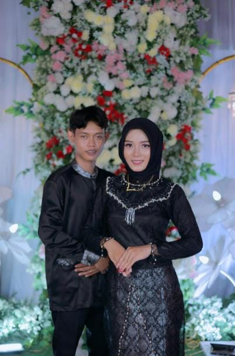

BAJU TUNANGAN
Baju tunangan adalah pakaian khusus yang dikenakan oleh pasangan dalam acara pertunangan. Acara ini merupakan momen penting yang menjadi tanda resmi hubungan menuju pernikahan. Oleh karena itu, baju tunangan biasanya dirancang untuk mencerminkan kesan elegan, anggun, dan sesuai dengan tema atau adat budaya yang dianut.
Baju tunangan dapat berupa gaun, kebaya, atau busana formal lainnya untuk wanita, sementara pria biasanya mengenakan jas, batik, atau pakaian tradisional. Pemilihan baju tunangan tidak hanya memperhatikan aspek estetika, tetapi juga kenyamanan dan kesesuaian dengan konsep acara. Dengan penampilan yang serasi, pasangan dapat tampil percaya diri dan meninggalkan kesan mendalam pada hari istimewa tersebut.